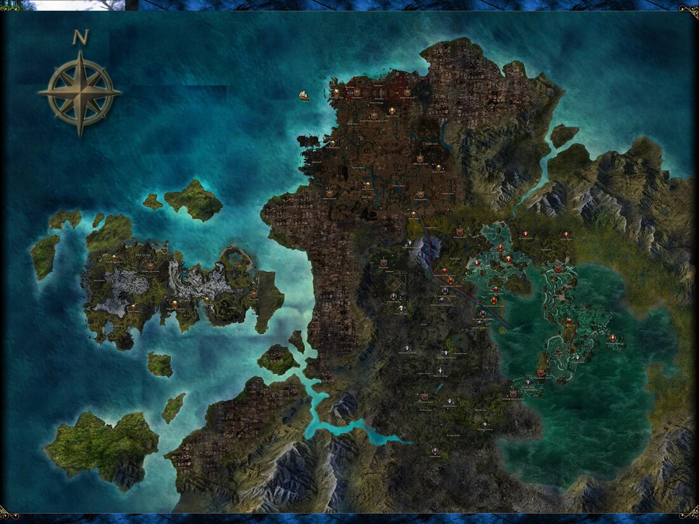
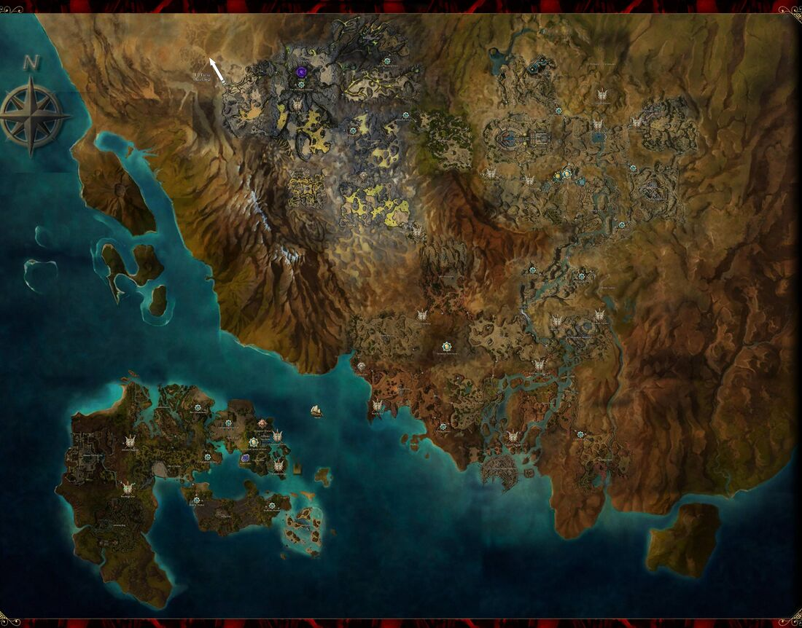

Campaign Missions & +30 Attribute Quests
Every story chapter in Guild Wars Reforged centers on instanced Cooperative Missions paired with optional Bonus Objectives (Protector titles) plus each campaign's two native +15 Attribute Point quests. Missions below follow chronological order across all three base campaigns and Eye of the North, with late-story plot twists hidden inside spoiler tags.
Prophecies Part 1 · Ascalon & Northern Shiverpeaks (4 to 6 Players) 0/0 (0%)
In Reforged Mode, early Prophecies missions award boosted XP, gold, and Skill Points while upgraded henchmen (including Alesia/Mhenlo with Resurrect) smooth out Ascalon and the Shiverpeak passes en route to Lion's Arch.
- 1. The Great Northern Wall: Scout north of the wall and flee back to Ascalon before Charr reinforcements arrive. Bonus: Inspect all four Charr Warhorn pieces along the side ruins before leaving.
- 2. Fort Ranik: Clear the siege outside Fort Ranik and defend Prince Rurik until trebuchets shatter the southern Charr gate. Bonus: Liberate three Ascalon prisoners along the western flank.
- 3. Ruins of Surmia: Escort Prince Rurik safely to Temple Guard Vassar while reclaiming the ruined city. Bonus: Guard Vassar until he reads every inscribed rune tablet without falling.
- 4. Nolani Academy: Recover the Stormcaller Horn with Rurik to break the Charr blockade at Ascalon's mountain pass. Bonus: Activate three ruined wall shrines across the southern courtyard.
- 5. Borlis Pass (Yak's Bend, 6 Players): Smash Stone Summit Dwarf beacons blocking Rurik's refugee column. Bonus: Protect the stranded Ascalonian guard patrol at the southern ruins.
- 6. The Frost Gate: Hold the pass while Prince Rurik stays behind to buy time and later falls to Dagnar, later returning as Undead Prince Rurik. Bonus: Slay the Stone Summit patrol ambush to open the side gate. Completing Frost Gate unlocks Beacon's Perch and the Kryta refugee run to Lion's Arch.

Prophecies Part 2 · Kryta, Maguuma, Desert & Finale (6 to 8 Players) 0/0 (0%)
Pause at Lion's Arch (after Kryta's coast road) to grab your 7-Hero team and max Kaineng armor, then blitz through Kryta, Crystal Desert Ascension, the Southern Shiverpeaks Infusion missions, and the Ring of Fire.
- 7. Gates of Kryta: Escort Ascalonian survivors into Lion's Arch alongside Confessor Dorian's White Mantle. Bonus: Recover the Krytan Royal Standard guarded by Undead on the western island.
- 8. D'Alessio Seaboard: Defend Lion's Arch harbor by closing Undead portals and guarding priests along the docks. Bonus: Clear the western cliff outpost before heading to the shipwrights.
- 9. Divinity Coast: Defend the Chosen ceremony from the White Mantle betrayal and their sinister Mursaat Unseen Ones masters, then flee into Maguuma with the Shining Blade. Bonus: Escort Loarin through the central village.
- 10. The Wilds: Navigate Shining Blade vine bridges to reach Saidra's camp. Bonus: Slay the four named Maguuma Wind Rider elders off the eastern loop.
- 11. Bloodstone Fen: Rescue Shining Blade captives inside the Bloodstone crater and confront Justiciar Hablion. Bonus: Liberate three captive cells along the outer perimeter before pulling Hablion.
- 12. Aurora Glade: Collect three magic seeds across White Mantle altars to restore the druidic shrine. Bonus: Defeat the hidden White Mantle Demagogue near the western ruins.
- 13. Riverside Province: Carry Shining Blade runner orders across fortified White Mantle watchposts. Bonus: Keep every Shining Blade prisoner alive during the fortress push.
- 14. Sanctum Cay (8 Players): Guard Vizier Khilbron, secretly the Undead Lich manipulating Ascalon and Orrians, to steal the Scepter of Orr before boarding ships to Amnoon Oasis. Bonus: Rescue Master Scout Kiera and protect her to the boat.
- 15. Dunes of Despair (Ascension 1 of 3): Hold Ghostly Hero against Scarab waves until sunrise. Bonus: Flag a Hero inside the far northern throne room to pull General Morgahn/Thorgall while defending Ghostly Hero.
- 16. Thirsty River (Ascension 2 of 3): Race across five Forgotten/Sand/Hydra altars and kill each Monk Priest within the two-minute respawn timers. Bonus: Clear the extra Forgotten garrison off the southwest flank.
- 17. Elona Reach (Ascension 3 of 3): Gather three Ghostly Vision Crystals and place them on the desert pedestal. Bonus: Bring the additional crystal near the Forgotten boss back north.
- 18. Augury Rock (Ascension Finale): Defeat your 1v1 Doppelganger reflection inside the inner sanctum (bring self-healing or let Mesmer interrupts win fast; Heroes stay behind after clearing the hall). Bonus: Light three flanking braziers around the outer desert court.
- 19. The Dragon's Lair: Traverse Glint's elemental chambers and defeat Glint herself (or clear the six crystal guardians; avoid standing inside Facet AoE pulses). Bonus: Free all three trapped dwarf/forgotten champions before ending.
- 20. Ice Caves of Sorrow: Escort King Jalis Ironhammer down through Mursaat ambushes while getting your armor Infused by the Ancient Seer (mandatory before Mursaat Spectral Agony hits). Bonus: Slay the Mursaat High Priest hiding in the lower eastern cavern.
- 21. Iron Mines of Moladune: Push through Stone Summit and Mursaat battlements (ensure every party member collects Seer Infusion on the south terrace). Bonus: Defeat Justiciar Kimii at the top stronghold.
- 22. Thunderhead Keep: Defend King Jalis inside Thunderhead Keep against simultaneous White Mantle/Mursaat waves (flag one Hero or clear north/south stairs cleanly). Bonus: Escort the two Dwarven demolition runners to breach both eastern gates.
- 23. Ring of Fire: Traverse lava bridges under fire to shut down the Mursaat Foundry defenses. Bonus: Clear the extra Mursaat group and rescue the Forgotten scout on the northeastern ridge.
- 24. Abaddon's Mouth: Confront the Mursaat bloodstone battery and fight Undead Prince Rurik's corrupted remnant atop the caldera rim. Bonus: Collect the Eidolon blessing and kill the bonus Mursaat boss south of the caldera.
- 25. Hell's Precipice (Prophecies Finale): Stop the Undead Lich (Vizier Khilbron) inside the Door of Komalie amidst lethal Titan spawns; bring your Soul Twisting Ritualist Hero so Titan AoEs never spike your team. Bonus: Slay all extra Ether Seals/Titan guardians around the volcanic rim before triggering the final seal.
- Prophecies +15 Attribute Quest 1 – Forgotten Wisdom: Accepted by Prophecies-native characters from Sariss Yassith in Skyward Reach (Crystal Desert, accessible from Elona Reach or Amnoon).
- Prophecies +15 Attribute Quest 2 – The Hero's Challenge: Accepted by Prophecies-native characters from Vanyi in Copperhammer Mines / Droknar's Forge area (Southern Shiverpeaks).
Factions · Cantha Missions & Attributes (Kaineng Center Onward) 0/0 (0%)
Tyrian visitors enter Factions directly at Kaineng Center via Welcome to Cantha (skipping Shing Jea missions 1 and 2, though you can run them anytime for completion titles). Speed determines Factions Master's Rank instead of a single side task.
- 1. Minister Cho's Estate (Shing Jea): Clear infected Minister Cho's guards and defeat the plagued estate boss (Master's: under 8 minutes).
- 2. Zen Daijun (Shing Jea): Escort Master Togo to purify three plague shrines before striking Crimson Skull/Afflicted at the inner sanctuary.
- 3. Vizunah Square (Foreign Quarter Entry): Converge with the Local Quarter party inside Kaineng slums and slay Shiro's first Afflicted lieutenant.
- 4. Nahpui Quarter (Fast Ascension / Secondary Unlock): Speak to all four Celestial Aspect shrines (Ki, Kirin, Turtle, Phoenix) and conquer their Aspect forms to reach Weh no Su (Closer to the Stars). Unlocks free secondary profession switching cleanly at Level 10 to 12.
- 5. Tahnnakai Temple: Purify five ancestral warrior tombs across the temple chambers alongside Master Togo and Mhenlo.
- 6. Arborstone (Kurzick Path Introduction): Protect Vizu and clear Stone Petrified guardians across the gothic cathedral ruins.
- 7. Boreas Seabed (Luxon Path Introduction): Rescue Zho and fight the petrified Kraken beneath the frozen Jade Sea.
- 8. Sunjiang District: Evacuate Kaineng officials before the Afflicted overrun the central plaza barricades.
- 9a. The Eternal Grove (Kurzick Branch): Gather tree essence while holding off invading Luxon siege teams across three sanctuary gates.
- 9b. Gyala Hatchery (Luxon Branch): Protect Siege Turtles carrying sea-monster eggs safely down the canyon gauntlet.
- 10. Unwaking Waters (Kuunavang Encounter): Clear corruption crystal clusters and defeat Kuunavang's corrupted form across three sky bridges.
- 11. Raisu Palace: Storm Raisu Palace and survive Shiro's ambush where Master Togo sacrifices himself to shield Emperor Kisu from Shiro's blade.
- 12. Imperial Sanctum (Factions Finale): Defeat Shiro Tagachi alongside Kuunavang using Celestial skills and heavy Mesmer/Ritualist interrupts against Impossible Odds.
- Factions +15 Attribute Quest 1 – Lost Treasure: For Factions-native characters, from Raitahn Nem in Seitung Harbor.
- Factions +15 Attribute Quest 2 – An Unwelcome Guest: For Factions-native characters, from Zunraa in Senji's Corner (after Weh no Su).

Nightfall · Elona Missions & Hero Forks (Consulate Docks Onward) 0/0 (0%)
Tyrian visitors board in Kamadan, defeat Blacktide Den via A Land of Heroes / The Time is Nigh, and launch straight into Consulate Docks (Mission 4). Required Heroes must sit in your active party bar to enter each mission.
- 1. Chahbek Village (Istan): Native starter mission using Koss against Corsair raiders (Master's: defeat all Corsair commanders quickly).
- 2. Jokanur Diggings (Istan): Push deeper into ancient Istan crypts with Melonni to uncover Apocrypha clues.
- 3. Blacktide Den (Istan): Assault Corsair gunships alongside Tahlkora to unlock the Kourna ferry.
- 4. Consulate Docks (Dunkoro Required): Storm Gandara harbor; completing this unlocks Yohlon Haven, Command Post, Olias, and Acolyte Sousuke.
- 5. Venta Cemetery (Koss Required): Clear Awakened and Kournan defenders holding the cliff ridge.
- 6. Kodonur Crossroads (Zhed Shadowhoof Required): Liberate Sunspear prisoners across the ruined town square.
- 7a/7b. Rilohn Refuge (Pick Master of Whispers) vs Pogahn Passage (Margrid): Choose Master of Whispers in Yohlon Haven for your Mesmerway Minion Master Hero first; pick up Margrid after finishing Nightfall.
- 8. Moddok Crevice (Dunkoro Required): Race through the gorge before Corsair signal boats alert Vabbi.
- 9. Tihark Orchard: Navigate Prince Bokka's social banquet tests and survive the Varesh ambush (pick Norgu in Mihanu Township afterward).
- 10a/10b. Dzagonur Bastion (Master of Whispers) vs Dasha Vestibule (Margrid): Hold the Vabbi fortress walls against Varesh's Kournan wave assaults.
- 11. Grand Court of Sebelkeh (Tahlkora Required): Defend the Vabbi court shrines from pouring Margonite portals.
- 12a. Jennur's Horde (Koss Required): Close rift beacons around the Nightfallen Garden using Sunspear Lightbringers.
- 12b. Nundu Bay (Melonni Required): Alternate Kourna fork defending Ronjok's harbor plague shrines (considered easier than Jennur's Horde).
- 13. Gate of Desolation (Zhed Required): Ride Junundu Sand Wurms across sulfurous wastes to shatter Varesh's monolith.
- 14. Ruins of Morah (General Morgahn Required): Confront General Varesh Ossa inside the ruined fortress before she unleashes Nightfall.
- 15. Gate of Pain (Dunkoro Required): Free the Apostate and assault Abaddon's Margonite fortress inside the Realm of Torment.
- 16. Gate of Madness (Required Heroes: None after entry unlock): Defeat Shiro Tagachi and the Undead Lich's Torment shades along five shrines before pushing to Abaddon's throne.
- 17. Abaddon's Gate (Nightfall Finale): Banish Abaddon by breaking his Torment Arm/Eye spawns, leading Kormir to absorb his unleashed divine essence and ascend as the Goddess of Truth. Afterward, accept Finding a Purpose from Keeper of Secrets at Gate of Torment for Hero Razah.
- Nightfall +15 Attribute Quests (Native Only): Rising in the Ranks: Master Sergeant and Rising in the Ranks: First Spear from Runduk in Sunspear Great Hall / Kourna as Sunspear Rank advances.

Eye of the North Expansion · Three Ally Arcs & Central Transfer Chamber 0/0 (0%)
After unlocking Vekk, Ogden Stonehealer, and Gwen at Boreal Station and the Eye of the North Hall of Monuments, complete the three regional ally storylines in any order to unite against the Great Destroyer.
- Asura Track (Tarnished Coast – Rata Sum): Complete Finding the Bloodstone, The Elusive Golemancer, and Genius Operated Living Enchanted Manifestation (unlocks Vekk quests and Asuran Scan / Intensity skills).
- Ebon Vanguard Track (Charr Homelands – Doomlore Shrine): Complete Against the Charr, Warband of Brothers, and Assault on the Stronghold (unlocks Ebon Vanguard Assassin Support and Jora / Pyre Fierceshot paths).
- Norn Track (Far Shiverpeaks – Gunnar's Hold): Complete Curse of the Nornbear, A Gate Too Far, and Blood Washes Blood (unlocks Xandra from Norn Fighting Tournament and "I Am Unstoppable!").
- Dwarven Finale (Central Transfer Chamber): Clear Destruction's Depths and A Time for Heroes to defeat the Great Destroyer, unlock Livia / Hayda / Kahmu, and open End-Game Dungeons and Hearts of the North.